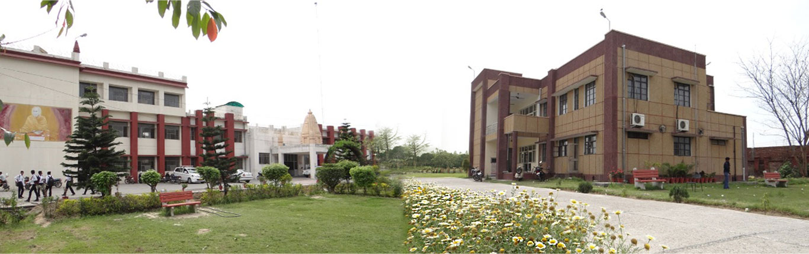
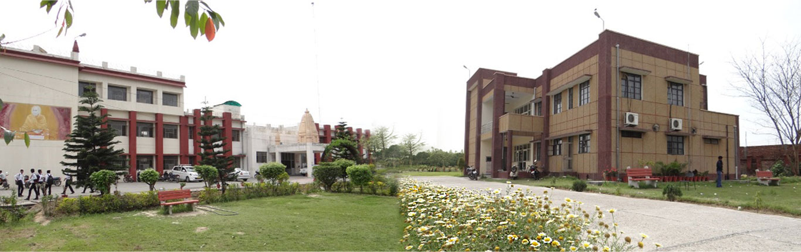

Gurukula Kangri Vishwavidyalaya was founded on March 4, 1902 by Swami Shraddhanandaji with the sole aim to revive the ancient Indian Gurukula System of education, on the bank of Ganges at a distance of about 6 km. from Hardwar and about 200 km. from Delhi. This institution was established with the objective of providing an indigenous alternative to Lord Macaulay’s education policy by imparting education in the areas of vedic literature, Indian philosophy, Indian culture, modern sciences and research.It is a deemed to be university fully funded by UGC/Govt. of India.
Arya Samaj has been advocating women’s education since the day it was founded. As part of its policies for the up-liftment of women in the country, Kanya Gurukula Campus, Dehradun was established in 1922 by Acharya Ramdevji as a second campus of women’s education. To give real shape to the dreams of Swami Shraddhanandaji, Kanya Gurukula Campus, Hardwar was established in 1993.
Achievements @ GKV


 
